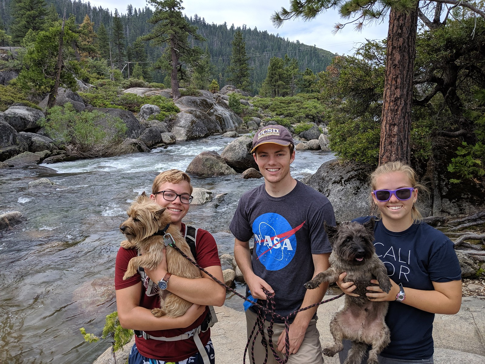
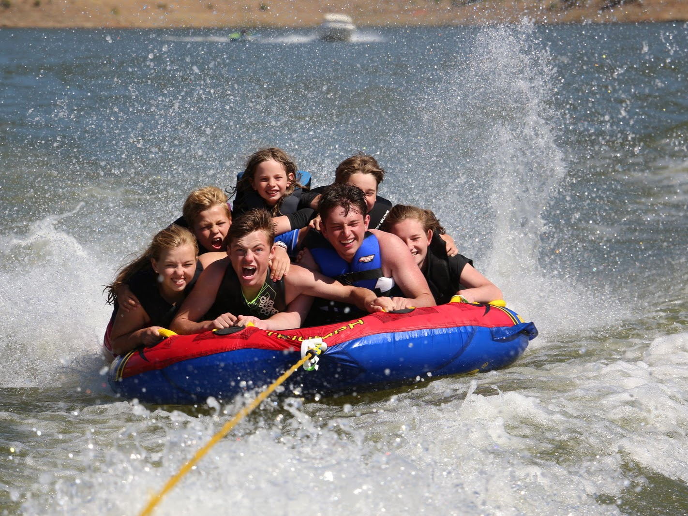

I am a 15 year old that is going to be a sophomore in high school this next year. I have one brother and one sister, and an adorable cairn terrier named Kody.
You can see my siblings' websites at
cyruscowley.com and tessacowley.com.

Some of my hobbies include reading, boating, and climbing. My favorite author is Brandon Sanderson, and my favorite book from him is Mistborn. Our family owns a boat, and we often go wakeboarding, wakesurfing, and tubing with it. My favorite activities are always some sort of adventure - like climbing Mount Shasta or exploring a cave.

After school, I teach piano to children 5 to 12 years old at Peery Piano Academy. I am an Eagle Scout, and a member of the Church of Jesus Christ of Latter-Day Saints. I am also a member of my school's waterpolo and swim teams during the fall and spring.